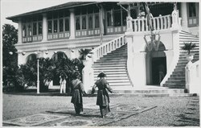

Sejarah Kota Palembang

Kota Palembang, terletak di Indonesia, memiliki sejarah yang kaya,
berumur setidaknya 1337 tahun berdasarkan prasasti Sriwijaya.
Didirikan oleh penguasa Sriwijaya pada tanggal 16 Juni 682, kota
ini dikelilingi air dari sungai dan rawa, dengan 52,24% tanahnya
masih tergenang air. Nama "Palembang" berasal dari kata Melayu
yang berarti tanah rendah yang digenangi air. Kondisi alam ini
memudahkan transportasi dan pengembangan ekonomi. Letak geografis
strategis kota ini menghubungkan daerah tinggi, kaki bukit, dan
pesisir, yang mempengaruhi kebudayaan dan menjadikannya ibukota
Sriwijaya, pusat kekuatan politik dan ekonomi di Asia Tenggara,
yang kemudian dilanjutkan oleh Kesultanan Palembang Darusallam.
Bahasa Asli Palembang

Bahasa Melayu Palembang ialah bahasa Palembang (dikenal sebagai
Baso Palembang), yang merupakan sebuah bentuk amalgamasi
linguistik antara Melayu Pesisir dan bahasa Jawa yang lahir
disebabkan oleh faktor kontak perdagangan antar etnis di tanah
Palembang yang telah berlangsung sejak ribuan tahun lalu.
Pernyataan tersebut didukung oleh McDonnell (2016), yang
menyebutkan bahwa bahasa Palembang adalah sebuah koiné language
(terj. 'bahasa campuran') yang lahir di Palembang dan wilayah
sekitarnya.
Rumah Adat Limas

Rumah Limas tak dapat terbantahkan merupakan rumah adat asli
Palembang. Bagi masyarakat etnis Melayu Palembang, Rumah Limas
kerap kali diasosiasikan dengan golongan bangsawan dan golongan
lain yang berstatus tinggi. Rumah ini berusia ratusan tahun yang
sudah tiga kali berpindah tempat sebelum akhirnya dipajang di
museum. Rumah yang ada di museum ini disebutkan awalnya dibangun
oleh bangsawan bernama Pangeran Syarif Abdurahma Al-Habsyi
berkebangsaan Arab. Rumah ini sudah beberapa kali pindah, karena
memang dibangun tanpa paku melainkan pasak, sehingga dapat
dibongkar untuk dipindahkan. Sesuai namanya, bagian atap berbentuk
limas atau mudahnya piramida terpenggal.
Pempek

Pempek mempunyai sejarah yang unik dan tidak dapat dilepaskan dari
masuknya para perantau Tionghoa ke Palembang semasa pemerintahan
Kesultanan Palembang Darussalam ketika dipimpin oleh Sultan Mahmud
Badaruddin II pada abad ke-16 Masehi. Berdasarkan cerita
masyarakat, pempek dijual keliling kota oleh seseorang asal
Tionghoa yang sering dipanggil Apek di kisaran tahun 1617 M. Apek
sendiri di dalam Bahasa Tionghoa memiliki arti paman atau
laki-laki tua, Apek sendiri pada saat itu berusia sekitar 65
tahun.